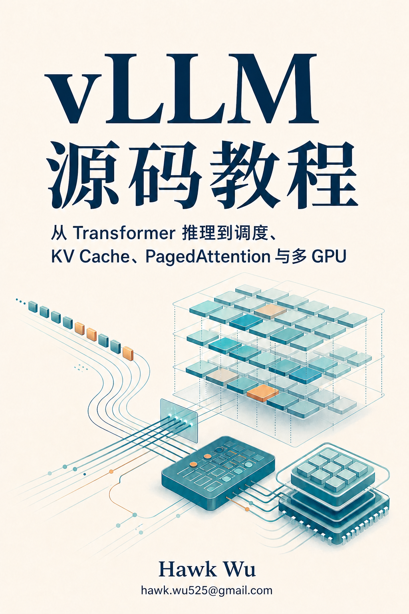

从现象出发
先解释“为什么请求会排队”“为什么 KV Cache 会耗尽”，再进入抽象、公式和实现。
vLLM V1 · 源码基线 5893426b
一份从 Transformer 推理出发，沿着 EngineCore、Scheduler、KV Cache、Attention Backend 和多 GPU 执行栈走到源码现场的中文教程。

SOURCE-GROUNDED / 2026 READ THE SYSTEM01 / WHY THIS BOOK
每一章都从一个能观察到的问题进入，再回到当前 revision 的真实源码。读者最终要能回答：谁创建了这个对象？数据从哪里来？状态在哪里变化？GPU 为什么要等？
先解释“为什么请求会排队”“为什么 KV Cache 会耗尽”，再进入抽象、公式和实现。
从用户入口一直追到 EngineCore、Scheduler、Worker 和 Model Runner，不把模块孤立讲解。
源码事实、测试、设计文档和实验观察分开标注，让结论能够被复查和继续维护。
02 / ONE REQUEST
这是全书的阅读主线。章节会不断回到这条路径，把控制面、数据面和设备边界逐层放大。
请求进入 client，完成 tokenization 与参数准备。
主循环接收请求，驱动一次又一次 engine step。
根据 token budget 与 KV 容量选择本轮工作。
把逻辑序列映射到可复用、可回收的物理 block。
组织 batch、调用模型、采样 token，再把结果送回。
阅读提示 第一遍只追粗线主路径；第二遍再回头看异步、并行、fallback 与异常传播。
03 / THE READING MAP
先建立一条能复述的端到端主线，再按需进入调度、显存、GPU 执行和分布式系统。每章都绑定同一个 vLLM revision。
一段文本如何变成一个又一个输出 token？
↗ 02全景一次请求经过哪些对象、线程、进程和设备？
↗ 03控制面谁驱动主循环，谁负责一轮执行完成？
↗ 04调度当前 step 到底应该计算谁？
↗ 05内存历史 token 如何放进有限显存，又如何被复用？
↗ 06寻址分散的 KV block 如何仍被看成一条历史序列？
↗ 07执行谁把调度结果真正变成 GPU 工作？
↗ 08优化怎样减少 CPU 准备和 kernel launch 的等待？
↗ 09并行谁拥有状态，谁计算结果，谁必须通信？
↗ 10验证如何知道瓶颈在哪里，并证明改动有效？
↗04 / HOW TO TRUST IT
这不是把源码换成更长的 prose。页面上的每个章节都携带 revision、范围、相关测试和实验边界。
查看源码版本记录 ↗当前 revision 中可直接观察到的调用、字段和状态变化。
用 fixture、单元测试和边界用例反证初始理解。
把注释、设计文档和实现行为放在同一张地图里比较。
记录命令、配置、硬件和限制，避免把单次结果写成普遍规律。
05 / PICK A PATH
如果你还不知道从哪一章开始，下面三条路线足够覆盖最常见的阅读目标。
ABOUT THE AUTHOR
我把阅读 vLLM 源码时反复遇到的“入口在哪里、状态谁拥有、为什么这样调度”整理成一份可以跟着走、可以回查、也可以继续维护的中文教程。